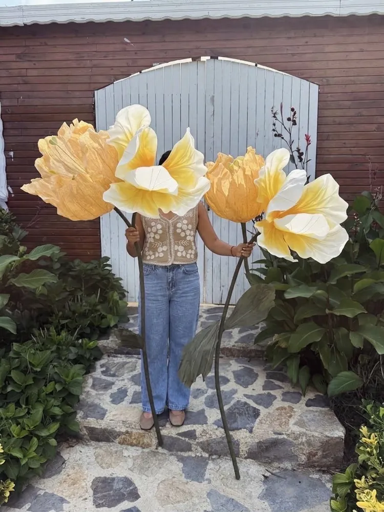

Rehber
Dev çiçek kiralama mı, satın alma mı?
Dev çiçekleri her şehirde satın alabilirsiniz. Kiralama ve yerinde kurulum yalnız İstanbul ve İzmir'de yapılır; diğer şehirlere satın alma ve kargo ile gönderilir. Lambader kiralanmaz, yalnız satılır.
Son güncelleme: · Eden Floral Art

Kiralama nerede mümkün?
Dev çiçek kiralama yalnız İstanbul ve İzmir'de yapılır; yerinde kurulum da bu şehirlerde yapılabilir. Etkinliğiniz başka bir şehirdeyse çiçekleri satın alabilir ve kargoyla gönderilmesini isteyebilirsiniz.
| Kiralama | Satın alma | |
|---|---|---|
| Hangi şehirlerde | Yalnız İstanbul ve İzmir | Her şehirde, kargoyla |
| Yerinde kurulum | İstanbul ve İzmir'de yapılabilir | Kargo ile gönderilir (Türkiye genelinde en fazla 3–4 gün) |
| Lambader | Kiralanmaz | Yalnız satılır |
Hangi durumda kiralama mantıklı?
Çiçeğe yalnızca birkaç gün ya da tek bir gece ihtiyacınız varsa, örneğin tek geceliğine kurulan nişan fonu ya da yalnızca hastane günleri için doğum odası süsü, kiralama değerlendirilebilir. Organizasyon firmaları için de kiralama veya satın alma modeliyle çalışabiliyoruz.
Hangi durumda satın almak mantıklı?
Çiçeği sonrasında evde, bebek odasında ya da mağazada dekor olarak tutmak istiyorsanız satın almak mantıklıdır. Çiçekler sezona bağlı olmadığı için uzun süre kullanılabilir; güneşten uzak tutmanız ve tozunu hafif nemli bezle almanız yeterlidir (bakım rehberi). Hazır modeller için Shopier mağazamıza da bakabilirsiniz.
Lambader kiralanır mı?
Hayır. Lambaderler kiralanmaz, yalnız satılır; modeller dev çiçek lambader sayfasında.
Süre, kargo ve kiralama koşulları
- Sipariş: genellikle 2–3 hafta önceden vermenizi öneriyoruz.
- Üretim: tasarıma göre 1–3 hafta sürer.
- Kargo: Türkiye genelinde en fazla 3–4 gün; üretim süresine dahil değildir, ücret paketin boyutuna göre değişir.
- Kiralama koşullarını sipariş sırasında DM'den birlikte netleştiririz.
Fiyat, boyuta, adede, renge ve kapsama göre değişir; sabit bir liste yoktur. Tercihinizi, tarihinizi ve şehrinizi Instagram'dan (@eden.floralart) yazın, tasarımı ve fiyatı birlikte netleştirelim.